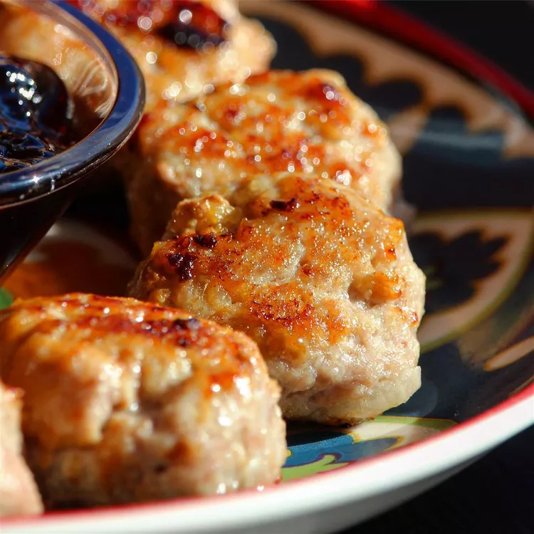

Swedish meatballs

Description
This is my mom's Swedish meatball recipe. This isn't the kind a lot of
people are used to in a creamy white sauce. She served them every
Christmas Eve in a chafing dish as part of the 'Smörgåsbord.' My mom used
to have a vegetable sour cream and a lingonberry sauce on the table for
those that might want to dip these in something.
Ingredients
- Butter
- Minced onions
- Dry bread crumbs
- Water
- Half-and-half
- Ground beef
- Ground pork
- Salt
- White pepper
- White sugar
Steps
-
This is my mom's Swedish meatball recipe. This isn't the kind a lot of
people are used to in a creamy white sauce. She served them every
Christmas Eve in a chafing dish as part of the 'Smörgåsbord.' My mom
used to have a vegetable sour cream and a lingonberry sauce on the table
for those that might want to dip these in something.
-
Mix bread crumbs, water, and half-and-half in a large bowl; let stand
for about 2 minutes. Stir cooked onion, ground beef, ground pork, salt,
white pepper, and sugar into bread crumb mixture until thoroughly mixed.
Shape mixture into about 48 very small meatballs.
-
Melt 3 tablespoons butter in a skillet; add meatballs. Brown slowly,
allowing about 25 minutes, until meatballs are fully cooked in the
middle and no longer pink. Shake pan occasionally to cook evenly.